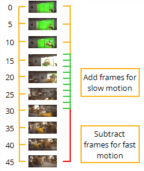
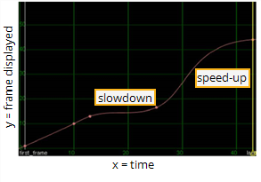

Warping refers to slowing down, speeding up, or even reversing select frames in a clip without necessarily altering its overall length. Otherwise stated, warps add, subtract, or reverse the temporal detail in a range of frames within a clip. For example, the figure below depicts a snowmobile clip (down-sampled to just ten frames for easy representation) that we might want to warp.
|
 |
| Planning the time warp. |
One way - in fact, kind of the classic way - to warp this clip would be to play the frames just prior to the collision at their original rate, the frames involving the collision in slow motion, and the frames after the collision in fast motion.
You could achieve such a warp by sculpting the curve in Nuke’s TimeWarp curve, which is a part of the Retime node’s parameters, to look something like the one depicted below.
|
 |
| Editing the warp curve. |
The basic “rules” for editing the warp curve are as follows:
• To slow down motion, decrease the slope of the curve.
• To speed up motion, increase the slope of the curve.
• To reverse motion, create a downward sloping portion on the curve (a dip, in other words).
| 1. | Click Time > Retime to insert a Retime node into your script. |
| 2. | Click the TimeWarp tab to reveal the TimeWarp curve. |
| 3. | Attach a Viewer to this node, so you can see the effect of your changes. |
| 4. | Sculpt the TimeWarp curve according to the rules above. (Ctrl/Cmd+Alt click to insert keyframe knots on the curve; Ctrl/Cmd+drag to reposition keyframe knots; Ctrl/Cmd+drag to rotate a keyframe knot control handles.) |
| 5. | If you want to enable frame blending on the output, either input a value larger than one in the Retime node’s shutter parameter, or insert a FrameBlend node prior to the Retime node. |
|
|